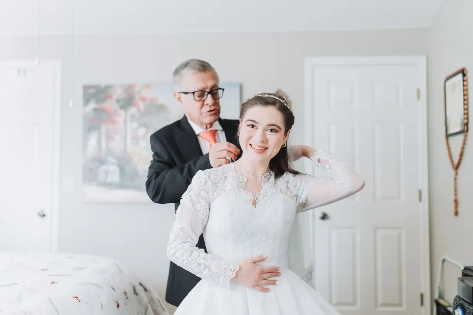
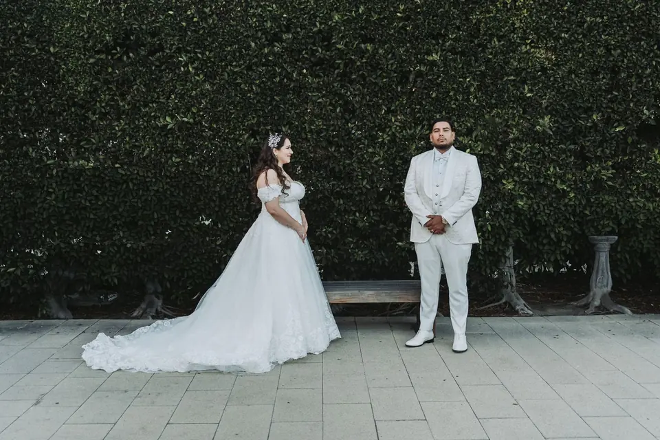
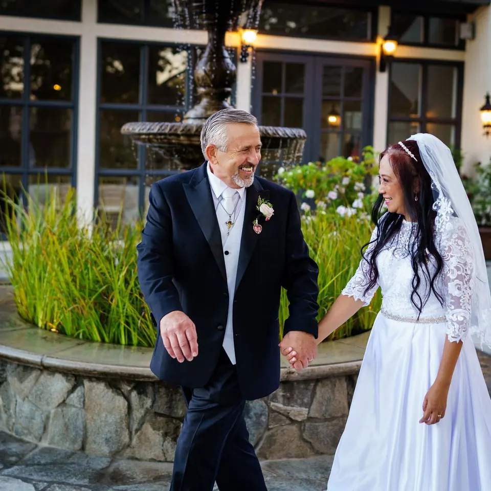

Real couples.
Real days.
Weddings from St. Mary’s to Holy Ghost, engagement sessions from Red Rocks to Highlands Ranch, and the planning guides every couple deserves.

-
01
Maria & ColeSt. Francis of Assisi Catholic wedding with a Cottonwood Lodge reception
Read the story
- 02 The perfect timelineA wedding photography duration guide Read the story
-
03

The morning ofHow to prep for perfect getting-ready photos Read the story -
04

After the wedding showJust got home from the wedding show? Read this first. Read the story -
05
 Makayla & MichaelRed Rocks Amphitheatre engagement photos
Read the story
Makayla & MichaelRed Rocks Amphitheatre engagement photos
Read the story
-
06
 What to expectWhat to expect when you book a photography session
Read the story
What to expectWhat to expect when you book a photography session
Read the story
-
07
 Kelly & JasonSt. Mary’s Catholic Church, Littleton winter wedding
Read the story
Kelly & JasonSt. Mary’s Catholic Church, Littleton winter wedding
Read the story
-
08
 Cheesman ParkSt. Mary’s Littleton wedding with Cheesman Park photos and a Knights of Columbus Hall reception
Read the story
Cheesman ParkSt. Mary’s Littleton wedding with Cheesman Park photos and a Knights of Columbus Hall reception
Read the story
-
09
 Christina & TannerHighlands Ranch Mansion engagement session
Read the story
Christina & TannerHighlands Ranch Mansion engagement session
Read the story
-
10
 Maddie & PietroHoly Ghost Catholic Church, Denver wedding with an Inverness reception
Read the story
Maddie & PietroHoly Ghost Catholic Church, Denver wedding with an Inverness reception
Read the story
-
11
 Sarah & ElijahReception at Nativity of Our Lord Catholic Church
Read the story
Sarah & ElijahReception at Nativity of Our Lord Catholic Church
Read the story
-
12

Josephine & DennisLove across the Pacific Read the story
(02) — Free guideCatholic weddings
Planning a
Catholic wedding?
Working with your parish, the moments of the Mass worth planning around, and how to build a calm timeline. Everything Jason shares with his own couples.
- Start with your parish
- The moments of the nuptial Mass
- Why a second photographer helps
- Family photos without the stress